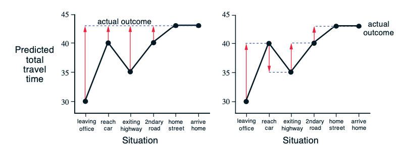
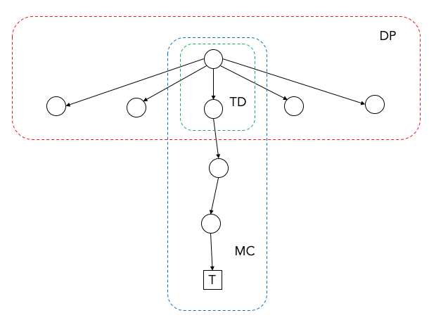
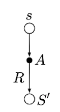
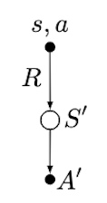
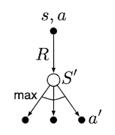

최적정책을 찾는 방법은 크게 최적가치함수(optimal value function) 를 찾은 후 최적정책을 구하는 가치함수법(value function methods) 과 직접 최적정책을 찾는 정책경사법(policy-gradient method) 으로 구분할 수 있다. 본 장에서는 가치함수법 중 비교적 작은 크기의 환경(small-scale environment)을 풀 때 사용할 수 있는 고전적인 강화학습을 살펴본다.
최적가치함수를 찾는 방법은 크게 동적계획법(Dynamic Programming, DP), 몬테카를로 방법(Monte Carlo Method, MC) 과 시간차학습(Temporal-Difference Learning, TD) 으로 나눌 수 있다.
DP는 I.4. Value function에서 설명한 벨만방정식을 이용하는 방법이다. 현재 상태(또는 현재 상태-행동)에서 한 스텝 후에 도달할 수 있는 모든 상태(또는 상태-행동)의 가치를 이용하여 현재 상태가치(또는 행동가치)를 업데이트하는 방법이다.
MC는 주어진 정책에 따라 현재 상태에서부터 종료상태까지 반복적으로 진행하여 얻은 이득으로 현재 가치를 업데이트하는 방법이다.
TD는 행동을 수행하고 한 스텝 후에 도달한 다음 상태의 가치와 이 때 받은 보상을 더한 값으로 현재 가치를 업데이트하는 방법이다.
DP는 한 스텝 후에 도달할 수 있는 모든 가치의 완전한 분포에 기반하여 현재 가치를 업데이트하는 기대값 업데이트(expected update) 를 사용한다. 반면 MC와 TD는 경로 샘플 또는 스텝 샘플을 이용하여 현재 가치를 업데이트하는 샘플 업데이트(sample update) 를 사용한다. 기대값 업데이트는 이미 분포를 알고 있으므로 반복적인 샘플링이 불필요하지만1 환경모델을 알아야 한다는 단점이 있다.
MC와 TD는 가치함수의 목표치(target) U_t와 추정치(estimate) V_\pi(s_t)의 차이에 학습률(learning rate) \alpha를 곱한 값을 현재 가치에 더하는 방식으로 현재 가치를 업데이트한다. 즉, 현재 가치함수의 추정치를 목표치에 근접시키는 과정을 반복한다.
V_\pi(s_t)\leftarrow V_\pi(s_t) + \alpha[U_t - V_\pi(s_t)]\tag{1}
가치함수 목표치 U_t의 엄밀한 값은 현재 상태 s_t에서 받을 수 있는 이득의 기대값(expected return)이다.
\begin{aligned}
U_t&=\mathbb{E}\left[G_t\right] \\
&=\mathbb{E}\left[\sum_{k=0}^\infty \gamma^k R_{t+k+1}\right] \\
&=\lim\limits_{N\rightarrow\infty}\frac{1}{N}\sum_{n=1}^N\left[\sum_{k=0}^\infty \gamma^k R_{t+k+1}\right]
\end{aligned}기대값은 무한히 반복한 후 평균을 낸 값이다. 하지만 실제로 무한히 반복하여 평균을 낼 수는 없기 때문에 추정량(estimator)을 이용하여 기대값을 추정한다.2
MC에서는 목표치 U_t에 대한 추정량이 이득 G_t이고, TD에서는 보상과 할인된 다음 상태가치를 더한 값 R_{t+1} + \gamma V_\pi(S_{t+1})이다.
V_\pi(s_t)\leftarrow V_\pi(s_t) + \alpha[G_t - V_\pi(s_t)]\tag{MC}
V_\pi(s_t)\leftarrow V_\pi(s_t) + \alpha[R_{t+1} + \gamma V_\pi(S_{t+1}) - V_\pi(s_t)]\tag{TD}
Figure 1은 퇴근 중 집에 도착하는 시간을 예측하는 예를 들어 MC와 TD의 차이점을 설명하는 그림{Sutton.2018}(123p)이다. 좌측의 MC 방법은 실제로 집에 도착한 시간으로 중간 예측을 업데이트하고 우측의 TD는 다음 스텝의 예측으로 이전 스텝의 예측을 업데이트한다.

Figure 1. Monte Carlo methods vs. temporal-difference learning
Figure 2에 도시한 바와 같이 MC는 종료상태까지 진행해야 업데이트가 가능하지만 DP와 TD는 한 스텝만 진행해도 업데이트가 가능하다. DP와 TD는 추정치로 추정치를 업데이트하기 때문이며 이러한 방법을 부트스트랩(bootstrap) 이라고 한다.

Figure 2. DP, MC and TD
추정량을 사용할 떄는 편향(bias)3과 분산(variance)을 고려해야 한다. MC의 목표치는 불편추정량(unbiased estimator)이지만 TD의 목표치는 편의추정량(biased estimator)이다.4 반면 MC의 목표치는 분산(variance)이 크지만 TD의 목표치는 분산이 적다.5 이러한 특징을 Table 1에 나타내었다.
Table 1. MC vs. TD
| MC | TD | |
|---|---|---|
| Estimator | G_t | R_{t+1}+\gamma V(S_{t+1}) |
| Bias | 0 | > 0 |
| Variance | High | Low |
Table 2에 DP, MC, TD의 특징을 정리하였다. 실제 강화학습에는 모델이 필요하지 않으면서 한 스텝 샘플로 업데이트가 가능한 TD 방법이 가장 많이 쓰인다.
Table 2. DP, MC, TD
| DP | TD | MC | |
|---|---|---|---|
| model-based | O | X | X |
| sample update | X | O | O |
| bootstrap | O | O | X |
1 최적정책을 찾기 위한 반복작업(iteration)은 필요하다.
2 점추정(point estimation)
3 모집단 파라미터 \theta의 추정량 \hat{\theta}에 대한 편향은 \mathbb{E}[\hat{\theta}]-\theta로 정의된다.
4 이득 G_t은 정의에 의하여 \mathbb{E}[G_t]-v_\pi(s_t)=v_\pi(s_t)-v_\pi(s_t)=0이므로 불편추정량이다. V_\pi(S_{t+1})이 추정치이기 때문에 \mathbb{E}[R_{t+1}+\gamma V_\pi(S_{t+1})]-v_\pi(s_t)\neq 0이다.
5 G_t=R_{t+1}+\gamma R_{t+2}+\gamma^2 R_{t+3}+\cdots에는 보상을 여러 번 더하므로 분산이 누적되지만 한 스텝의 보상만을 사용하는 R_{t+1}+\gamma V_\pi(S_{t+1})은 비교적 분산이 작다.
본 절에서는 중요한 TD 알고리즘 몇 가지를 살펴본다.
가장 기본적인 TD 알고리즘인 TD(0)는 앞에서 설명한 바와 같이 한 스텝 후의 보상에 다음 상태의 가치를 더한 값을 목표치로 사용한다.
V_\pi(s_t)\leftarrow V_\pi(s_t) + \alpha[R_{t+1} + \gamma V_\pi(S_{t+1}) - V_\pi(s_t)]
TD(0)의 행동가치함수 버전이 Sarsa 알고리즘이다. Sarsa는 state-action-reward-state-action의 조합으로 만든 용어이다.
Q_\pi(s_t,a_t)\leftarrow Q_\pi(s_t,a_t) + \alpha[R_{t+1} + \gamma Q_\pi(S_{t+1},A_{t+1}) - Q_\pi(s_t,a_t)]
Q-learning은 Sarsa의 다음 행동가치 샘플 Q_\pi(S_{t+1},A_{t+1}) 대신 최대값 \max\limits_{a\in A_{t+1}}Q_\pi(S_{t+1},a)을 사용하는 알고리즘이다.
Q_\pi(s_t,a_t)\leftarrow Q_\pi(s_t,a_t) + \alpha[R_{t+1} + \gamma \max\limits_{a\in A_{t+1}}Q_\pi(S_{t+1},a) - Q_\pi(s_t,a_t)]
세 알고리즘의 추정량을 Table 3에 정리하였다.
Table 3. Estimator of TD(0), Sarsa, and Q-learning
| Value estimated | TD target | |
|---|---|---|
| TD(0) | v_\pi(s_t) | R_{t+1} + \gamma V_\pi(S_{t+1}) |
| Sarsa | q_\pi(s_t,a_t) | R_{t+1} + \gamma Q_\pi(S_{t+1},A_{t+1}) |
| Q-learning | q_\pi(s_t,a_t) | R_{t+1} + \gamma \max\limits_{a\in A_{t+1}}Q_\pi(S_{t+1},a) |
백업다이어그램으로 비교하면 Figure 3과 같다.
| TD(0) | Sarsa | Q-learning |
|---|---|---|
 |
 |
 |
Figure 3. Backup diagrams of TD(0), Sarsa, and Q-learning
상태공간의 크기가 비교적 작은 MDP를 풀 때는 상태가치함수 또는 행동가치함수를 테이블 형태로 만들어 업데이트를 하면 최적가치함수를 찾을 수 있고 이로부터 최적정책을 만들 수 있다. 하지만 바둑, 큐브퍼즐(Rubik's cube)이나 자율주행을 위한 영상신호, 7자유도 로봇팔의 관절운동과 같이 상태공간이 매우 크거나 연속상태공간을 다룰 때에는 함수근사화(function approximation) 기법이 필요하다.
상태가치함수 v_\pi(s_t)를 근사하기 위한 함수(function approximator)를 \hat{v}(s_t,\bold{w_t})라고 한다면 평균제곱가치오차(mean squared value error) \bar{VE}는 다음과 같이 정의된다.
\begin{aligned}
\bar{VE}(\bold{w})&\doteq\sum\limits_{s\in S}\rho(s)\left[v_\pi(s)-\hat{v}(s,\bold{w})\right]^2 \\
&=\mathbb{E}_\rho\left[\left[v_\pi(s)-\hat{v}(s,\bold{w})\right]^2\right]
\end{aligned}여기서 \rho(s)는 정상상태분포이고 \mathbb{E}_\rho[\cdot]은 \rho(s)에 대한 기대값을 의미한다.
최적의 근사함수를 얻기 위해서는 \bar{VE}(\bold{w})를 최소화하는 파라미터 \bold{w}를 찾아야 한다. 이를 위하여 경사하강법(gradient-descent method)을 고려할 수 있다. 경사를 구하기 위하여 \nabla_{\bold{w}}\bar{VE}(\bold{w})를 계산하여야 하지만 정상상태분포를 구하기 위해서 수많은 에피소드가 필요하기 때문에 현실적이지 못하다. 이를 극복하기 위하여 확률론적 경사하강법(stochastic gradient-descent, SGD)을 사용할 수 있다. SGD는 \nabla_{\bold{w}}\bar{VE}(\bold{w})의 샘플인 \nabla_{\bold{w}}\left[v_\pi(s)-\hat{v}(s,\bold{w})\right]^2을 이용하여 최적화를 수행하는 방법이다.
\begin{aligned}
\bold{w_{t+1}}&=\bold{w_t}-\frac{1}{2}\alpha\nabla_{\bold{w}}\left[v_\pi(s_t)-\hat{v}(s_t,\bold{w_t})\right]^2 \\
&=\bold{w_t}+\alpha\left[v_\pi(s_t)-\hat{v}(s_t,\bold{w_t})\right]\nabla_{\bold{w}}\hat{v}(s_t,\bold{w_t})
\end{aligned}\tag{2}식 (2)는 식 (1)의 근사함수 버전이라고 할 수 있다. Table 1과 마찬가지로 가치함수 대신 여러가지 목표치를 사용할 수 있으며 그에 따라 근사화된 TD(0), Sarsa, Q-learning 등을 만들 수 있다. 근사함수로는 다양한 방법이 있으나 최근 딥러닝(deep learning)의 발달로 딥신경망(Deep Neural Network, DNN)을 근사함수(function approximator)로 활용하는 기법이 각광을 받고 있다.
2015년 구글 딥마인드(DeepMind)가 네이처지에 발표한 논문{Mnih.2015}으로써 기존 Q-learning에 CNN(Convolutional Neural Network)을 접목시켜 아타리(Atari) 게임에서 인간의 실력을 능가하는 에이전트를 강화학습하는 알고리즘을 발표하여 놀라움을 주었다.
DQN은 딥러닝을 접목하여 end-to-end(센서의 raw data로부터 행동까지 전 과정을 처리하는) 방식의 에이전트를 얻어낸 성과 외에도 근사함수, 부트스트랩 및 비활성 정책 학습(off-policy training){Sutton.2018}을 사용하는 경우 기존 강화학습 알고리즘의 고질적인 발산 문제를 해결했다는 데에 의의가 있다. DQN의 핵심 아이디어는 다음과 같다.
{References}